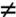
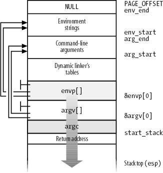

{% include JB/setup %}
{% raw %}
<div>


<a name="understandlk-CHP-20-SECT-1"></a>
<h3 class="docSection1Title" id="534871-927">20.1. Executable Files</h3><a name="IDX-CHP-20-4716"></a>
<a name="IDX-CHP-20-4717"></a>
<a name="IDX-CHP-20-4718"></a>
<a name="IDX-CHP-20-4719"></a>
<a name="IDX-CHP-20-4720"></a>
<p class="docText1"><a class="pcalibre5 docLink pcalibre1" href="understandlk-CHP-1.html#understandlk-CHP-1">Chapter 1</a> defined a process as an "execution context." By this we mean the collection of information needed to carry on a specific computation; it includes the pages accessed, the open files, the hardware register contents, and so on. An <span class="docEmphasis">executable file</span> is a regular file that describes how to initialize a new execution context (i.e., how to start a new computation).</p>
<p class="docText1">Suppose a user wants to list the files in the current directory; he knows that this result can be simply achieved by typing the filename of the <i class="docEmphasis">/bin/ls</i><tt class="calibre25"><sup class="docFootnote3"><a class="pcalibre5 docLink pcalibre1" href="#understandlk-CHP-20-FN1">[*]</a></sup></tt> external command at the shell prompt. The command shell forks a new process, which in turn invokes an <tt class="calibre25">execve( )</tt> system call (see the section "<a class="pcalibre5 docLink pcalibre1" href="understandlk-CHP-20-SECT-4.html#understandlk-CHP-20-SECT-4">The exec Functions</a>" later in this chapter), passing as one of its parameters a string that includes the full pathname for the <i class="docEmphasis">ls</i> executable file<i class="docEmphasis">/bin/ls</i>, in this case. The <tt class="calibre25">sys_execve( )</tt> service routine finds the corresponding file, checks the executable format, and modifies the execution context of the current process according to the information stored in it. As a result, when the system call terminates, the process starts executing the code stored in the executable file, which performs the directory listing.</p><blockquote class="calibre22"><p class="docFootnote1"><sup class="calibre24"><a name="understandlk-CHP-20-FN1">[*]</a></sup> The pathnames of executable files<a name="IDX-CHP-20-4721"></a> 
 are not fixed in Linux; they depend on the distribution used. Several standard naming schemes, such as <span class="docEmphasis">Filesystem Hierarchy Standard</span><a name="IDX-CHP-20-4722"></a> 
 (<span class="docEmphasis">FHS</span>), have been proposed for all Unix systems.</p></blockquote>
<p class="docText1">When a process starts running a new program, its execution context changes drastically because most of the resources obtained during the process's previous computations are discarded. In the preceding example, when the process starts executing <i class="docEmphasis">/bin/ls</i>, it replaces the shell's arguments with new ones passed as parameters in the <tt class="calibre25">execve( )</tt> system call and acquires a new shell environment (see the later section "<a class="pcalibre5 docLink pcalibre1" href="#understandlk-CHP-20-SECT-1.2">Command-Line Arguments and Shell Environment</a>"). All pages inherited from the parent (and shared with the Copy On Write mechanism) are released so that the new computation starts with a fresh User Mode address space; even the privileges of the process could change (see the later section "<a class="pcalibre5 docLink pcalibre1" href="#understandlk-CHP-20-SECT-1.1">Process Credentials and Capabilities</a>"). However, the process PID doesn't change, and the new computation inherits from the previous one all open file descriptors<a name="IDX-CHP-20-4723"></a> 
 that were not closed automatically while executing the <tt class="calibre25">execve( )</tt> system call.<sup class="docFootnote"><a class="pcalibre5 docLink pcalibre1" href="#understandlk-CHP-20-FN2">[*]</a></sup></p><blockquote class="calibre22"><p class="docFootnote1"><sup class="calibre24"><a name="understandlk-CHP-20-FN2">[*]</a></sup> By default, a file already opened by a process stays open after issuing an <tt class="calibre42">execve( )</tt> system call. However, the file is automatically closed if the process has set the corresponding bit in the <tt class="calibre42">close_on_exec</tt> field of the <tt class="calibre42">files_struct</tt> structure (see <a class="pcalibre5 docLink pcalibre1" href="understandlk-CHP-12-SECT-2.html#understandlk-CHP-12-TABLE-7">Table 12-7</a> in <a class="pcalibre5 docLink pcalibre1" href="understandlk-CHP-12.html#understandlk-CHP-12">Chapter 12</a>); this is done by means of the <tt class="calibre42">fcntl( )</tt> system call.</p></blockquote>
<a name="understandlk-CHP-20-SECT-1.1"></a>
<h4 class="docSection2Title">20.1.1. Process Credentials and Capabilities</h4><a name="IDX-CHP-20-4724"></a>
<a name="IDX-CHP-20-4725"></a>
<a name="IDX-CHP-20-4726"></a>
<a name="IDX-CHP-20-4727"></a>
<a name="IDX-CHP-20-4728"></a>
<a name="IDX-CHP-20-4729"></a>
<a name="IDX-CHP-20-4730"></a>
<a name="IDX-CHP-20-4731"></a>
<a name="IDX-CHP-20-4732"></a>
<p class="docText1">Traditionally, Unix systems associate with each process some <span class="docEmphasis">credentials</span>, which bind the process to a specific user and a specific user group. Credentials are important on multiuser systems because they determine what each process can or cannot do, thus preserving both the integrity of each user's personal data and the stability of the system as a whole.</p>
<p class="docText1">The use of credentials requires support both in the process data structure and in the resources being protected. One obvious resource is a file. Thus, in the Ext2 filesystem<a name="IDX-CHP-20-4733"></a> 
, each file is owned by a specific user and is bound to a group of users. The owner of a file may decide what kind of operations are allowed on that file, distinguishing among herself, the file's user group, and all other users. When a process tries to access a file, the VFS always checks whether the access is legal, according to the permissions established by the file owner and the process credentials<a name="IDX-CHP-20-4734"></a> 
.</p>
<p class="docText1">The process's credentials are stored in several fields of the process descriptor, listed in <a class="pcalibre5 docLink pcalibre1" href="#understandlk-CHP-20-TABLE-1">Table 20-1</a>. These fields contain identifiers of users and user groups in the system, which are usually compared with the corresponding identifiers stored in the inodes of the files being accessed.</p>
<a name="understandlk-CHP-20-TABLE-1"></a><p class="calibre14"><table cellspacing="0" frame="hsides" rules="all" cellpadding="4" width="100%" class="calibre15"><caption class="calibre33"><h5 class="docFigureTitle">Table 20-1. Traditional process credentials</h5></caption><colgroup class="calibre16"><col class="calibre17"/><col class="calibre17"/></colgroup><thead class="calibre18"><tr class="calibre34"><th class="thead" scope="col"><p class="docText1"><span class="calibre5">Name</span></p></th><th class="thead" scope="col"><p class="docText1"><span class="calibre5">Description</span></p></th></tr></thead><tr class="calibre2"><td class="docTableCell"><p class="docText2"><tt class="calibre25">uid</tt>, <tt class="calibre25">gid</tt></p></td><td class="docTableCell"><p class="docText2">User and group real identifiers</p></td></tr><tr class="calibre2"><td class="docTableCell"><p class="docText2"><tt class="calibre25">euid</tt>, <tt class="calibre25">egid</tt></p></td><td class="docTableCell"><p class="docText2">User and group effective identifiers</p></td></tr><tr class="calibre2"><td class="docTableCell"><p class="docText2"><tt class="calibre25">fsuid</tt>, <tt class="calibre25">fsgid</tt></p></td><td class="docTableCell"><p class="docText2">User and group effective identifiers for file access</p></td></tr><tr class="calibre2"><td class="docTableCell"><p class="docText2"><tt class="calibre25">groups</tt></p></td><td class="docTableCell"><p class="docText2">Supplementary group identifiers</p></td></tr><tr class="calibre2"><td class="docTableCell"><p class="docText2"><tt class="calibre25">suid</tt>, <tt class="calibre25">sgid</tt></p></td><td class="docTableCell"><p class="docText2">User and group saved identifiers</p></td></tr></table></p><br class="calibre7"/>
<p class="docText1">A UID<a name="IDX-CHP-20-4735"></a> 
 of 0 specifies the superuser (root), while a user group ID<a name="IDX-CHP-20-4736"></a> 
 of 0 specifies the root group. If a process credential stores a value of 0, the kernel bypasses the permission checks and allows the privileged process to perform various actions, such as those referring to system administration or hardware manipulation, that are not possible to unprivileged processes.</p>
<p class="docText1">When a process is created, it always inherits the credentials of its parent. However, these credentials can be modified later, either when the process starts executing a new program or when it issues suitable system calls. Usually, the <tt class="calibre25">uid</tt>, <tt class="calibre25">euid</tt>, <tt class="calibre25">fsuid</tt>, and <tt class="calibre25">suid</tt> fields of a process contain the same value. When the process executes a <span class="docEmphasis">setuid program</span>that is, an executable file whose <span class="docEmphasis">setuid</span> flag is onthe <tt class="calibre25">euid</tt> and <tt class="calibre25">fsuid</tt> fields are set to the identifier of the file's owner. Almost all checks involve one of these two fields: <tt class="calibre25">fsuid</tt> is used for file-related operations, while <tt class="calibre25">euid</tt> is used for all other operations. Similar considerations apply to the <tt class="calibre25">gid</tt>, <tt class="calibre25">egid</tt>, <tt class="calibre25">fsgid</tt>, and <tt class="calibre25">sgid</tt> fields that refer to group identifiers.</p>
<p class="docText1">As an illustration of how the <tt class="calibre25">fsuid</tt> field is used, consider the typical situation when a user wants to change his password. All passwords are stored in a common file, but he cannot directly edit this file because it is protected. Therefore, he invokes a system program named <i class="docEmphasis">/usr/bin/passwd</i>, which has the <span class="docEmphasis">setuid</span> flag set and whose owner is the superuser. When the process forked by the shell executes such a program, its <tt class="calibre25">euid</tt> and <tt class="calibre25">fsuid</tt> fields are set to 0to the PID of the superuser. Now the process can access the file, because, when the kernel performs the access control, it finds a 0 value in <tt class="calibre25">fsuid</tt>. Of course, the <i class="docEmphasis">/usr/bin/passwd</i> program does not allow the user to do anything but change his own password.</p>
<p class="docText1">Unix's long history teaches the lesson that <span class="docEmphasis">setuid programs</span><a name="IDX-CHP-20-4737"></a> 
programs that have the <span class="docEmphasis">setuid</span> flag setare quite dangerous: malicious users could trigger some programming errors (bugs) in the code to force <span class="docEmphasis">setuid</span> programs to perform operations that were never planned by the program's original designers. In the worst case, the entire system's security can be compromised. To minimize such risks, Linux, like all modern Unix systems, allows processes to acquire <span class="docEmphasis">setuid</span> privileges only when necessary and drop them when they are no longer needed. This feature may turn out to be useful when implementing user applications with several protection levels. The process descriptor includes an <tt class="calibre25">suid</tt> field, which stores the values of the effective identifiers (<tt class="calibre25">euid</tt> and <tt class="calibre25">fsuid</tt>) at the <span class="docEmphasis">setuid</span> program startup. The process can change the effective identifiers by means of the <tt class="calibre25">setuid( )</tt>, <tt class="calibre25">setresuid( )</tt>, <tt class="calibre25">setfsuid( )</tt>, and <tt class="calibre25">setreuid( )</tt> system calls.<sup class="docFootnote"><a class="pcalibre5 docLink pcalibre1" href="#understandlk-CHP-20-FN3">[*]</a></sup></p><blockquote class="calibre22"><p class="docFootnote1"><sup class="calibre24"><a name="understandlk-CHP-20-FN3">[*]</a></sup> A group's effective credentials can be changed by issuing the corresponding <tt class="calibre42">setgid( )</tt>, <tt class="calibre42">setresgid( )</tt>, <tt class="calibre42">setfsgid( )</tt>, and <tt class="calibre42">setregid( )</tt> system calls.</p></blockquote>
<p class="docText1"><a class="pcalibre5 docLink pcalibre1" href="#understandlk-CHP-20-TABLE-2">Table 20-2</a> shows how these system calls affect the process's credentials. Be warned that if the calling process does not already have superuser privilegesthat is, if its <tt class="calibre25">euid</tt> field is not nullthese system calls can be used only to set values already included in the process's credential fields. For instance, an average user process can store the value <tt class="calibre25">500</tt> into its <tt class="calibre25">fsuid</tt> field by invoking the <tt class="calibre25">setfsuid( )</tt> system call, but only if one of the other credential fields already holds the same value.</p>
<a name="understandlk-CHP-20-TABLE-2"></a><p class="calibre14"><table cellspacing="0" frame="hsides" rules="all" cellpadding="4" width="100%" class="calibre15"><caption class="calibre33"><h5 class="docFigureTitle">Table 20-2. Semantics of the system calls that set process credentials</h5></caption><colgroup class="calibre16"><col class="calibre17"/><col class="calibre17"/><col class="calibre17"/><col class="calibre17"/><col class="calibre17"/><col class="calibre17"/></colgroup><thead class="calibre18"><tr class="calibre34"><th class="thead" scope="col"><p class="docText1"><span class="calibre5">Field</span></p></th><th class="thead" scope="col" colspan="2"><p class="docText1">setuid (e)</p></th><th class="thead" scope="col"><p class="docText1"><span class="calibre5">setresuid (u,e,s)</span></p></th><th class="thead" scope="col"><p class="docText1"><span class="calibre5">setreuid (u,e)</span></p></th><th class="thead" scope="col"><p class="docText1"><span class="calibre5">setfsuid (f)</span></p></th></tr><tr class="calibre34"><th class="thead2" scope="col"> </th><th class="thead" scope="col"><p class="docText1"><span class="calibre5">euid=0</span></p></th><th class="thead" scope="col"><p class="docText1"><span class="calibre5">euid0</span></p></th><th class="thead2" scope="col"> </th><th class="thead2" scope="col"> </th><th class="thead2" scope="col"> </th></tr></thead><tr class="calibre2"><td class="docTableCell"><p class="docText2"><tt class="calibre25">uid</tt></p></td><td class="docTableCell"><p class="docText2">Set to <tt class="calibre25">e</tt></p></td><td class="docTableCell"><p class="docText2">Unchanged</p></td><td class="docTableCell"><p class="docText2">Set to <tt class="calibre25">u</tt></p></td><td class="docTableCell"><p class="docText2">Set to <tt class="calibre25">u</tt></p></td><td class="docTableCell"><p class="docText2">Unchanged</p></td></tr><tr class="calibre2"><td class="docTableCell"><p class="docText2"><tt class="calibre25">euid</tt></p></td><td class="docTableCell"><p class="docText2">Set to <tt class="calibre25">e</tt></p></td><td class="docTableCell"><p class="docText2">Set to <tt class="calibre25">e</tt></p></td><td class="docTableCell"><p class="docText2">Set to <tt class="calibre25">e</tt></p></td><td class="docTableCell"><p class="docText2">Set to <tt class="calibre25">e</tt></p></td><td class="docTableCell"><p class="docText2">Unchanged</p></td></tr><tr class="calibre2"><td class="docTableCell"><p class="docText2"><tt class="calibre25">fsuid</tt></p></td><td class="docTableCell"><p class="docText2">Set to <tt class="calibre25">e</tt></p></td><td class="docTableCell"><p class="docText2">Set to <tt class="calibre25">e</tt></p></td><td class="docTableCell"><p class="docText2">Set to <tt class="calibre25">e</tt></p></td><td class="docTableCell"><p class="docText2">Set to <tt class="calibre25">e</tt></p></td><td class="docTableCell"><p class="docText2">Set to <tt class="calibre25">f</tt></p></td></tr><tr class="calibre2"><td class="docTableCell"><p class="docText2"><tt class="calibre25">suid</tt></p></td><td class="docTableCell"><p class="docText2">Set to <tt class="calibre25">e</tt></p></td><td class="docTableCell"><p class="docText2">Unchanged</p></td><td class="docTableCell"><p class="docText2">Set to <tt class="calibre25">s</tt></p></td><td class="docTableCell"><p class="docText2">Set to <tt class="calibre25">e</tt></p></td><td class="docTableCell"><p class="docText2">Unchanged</p></td></tr></table></p><br class="calibre7"/>
<p class="docText1">To understand the sometimes complex relationships among the four user ID fields, consider for a moment the effects of the <tt class="calibre25">setuid( )</tt> system call. The actions are different, depending on whether the calling process's <tt class="calibre25">euid</tt> field is set to 0 (that is, the process has superuser privileges) or to a normal UID<a name="IDX-CHP-20-4738"></a> 
.</p>
<p class="docText1">If the <tt class="calibre25">euid</tt> field is 0, the system call sets all credential fields of the calling process (<tt class="calibre25">uid</tt>, <tt class="calibre25">euid</tt>, <tt class="calibre25">fsuid</tt>, and <tt class="calibre25">suid</tt>) to the value of the parameter <tt class="calibre25">e</tt>. A superuser process can thus drop its privileges and become a process owned by a normal user. This happens, for instance, when a user logs in: the system forks a new process with superuser privileges, but the process drops its privileges by invoking the <tt class="calibre25">setuid( )</tt> system call and then starts executing the user's login shell program.</p>
<p class="docText1">If the <tt class="calibre25">euid</tt> field is not 0, the <tt class="calibre25">setuid( )</tt> system call modifies only the value stored in <tt class="calibre25">euid</tt> and <tt class="calibre25">fsuid</tt>, leaving the other two fields unchanged. This behavior of the system call is useful when implementing a <span class="docEmphasis">setuid</span> program that scales up and down the effective process's privileges stored in the <tt class="calibre25">euid</tt> and <tt class="calibre25">fsuid</tt> fields.</p>
<a name="understandlk-CHP-20-SECT-1.1.1"></a>
<h5 class="docSection3Title">20.1.1.1. Process capabilities</h5><a name="IDX-CHP-20-4739"></a>
<a name="IDX-CHP-20-4740"></a>
<a name="IDX-CHP-20-4741"></a>
<a name="IDX-CHP-20-4742"></a>
<a name="IDX-CHP-20-4743"></a>
<a name="IDX-CHP-20-4744"></a>
<a name="IDX-CHP-20-4745"></a>
<a name="IDX-CHP-20-4746"></a>
<a name="IDX-CHP-20-4747"></a>
<a name="IDX-CHP-20-4748"></a>
<a name="IDX-CHP-20-4749"></a>
<a name="IDX-CHP-20-4750"></a>
<a name="IDX-CHP-20-4751"></a>
<a name="IDX-CHP-20-4752"></a>
<a name="IDX-CHP-20-4753"></a>
<a name="IDX-CHP-20-4754"></a>
<a name="IDX-CHP-20-4755"></a>
<a name="IDX-CHP-20-4756"></a>
<a name="IDX-CHP-20-4757"></a>
<a name="IDX-CHP-20-4758"></a>
<a name="IDX-CHP-20-4759"></a>
<a name="IDX-CHP-20-4760"></a>
<a name="IDX-CHP-20-4761"></a>
<a name="IDX-CHP-20-4762"></a>
<a name="IDX-CHP-20-4763"></a>
<a name="IDX-CHP-20-4764"></a>
<a name="IDX-CHP-20-4765"></a>
<a name="IDX-CHP-20-4766"></a>
<a name="IDX-CHP-20-4767"></a>
<a name="IDX-CHP-20-4768"></a>
<a name="IDX-CHP-20-4769"></a>
<a name="IDX-CHP-20-4770"></a>
<a name="IDX-CHP-20-4771"></a>
<a name="IDX-CHP-20-4772"></a>
<a name="IDX-CHP-20-4773"></a>
<a name="IDX-CHP-20-4774"></a>
<a name="IDX-CHP-20-4775"></a>
<p class="docText1">The POSIX.1e draftnow withdrawnintroduced another model of process credentials based on the notion of "capabilities." The Linux kernel supports POSIX capabilities, although most Linux distributions do not make use of them.</p>
<p class="docText1">A <span class="docEmphasis">capability</span> is simply a flag that asserts whether the process is allowed to perform a specific operation or a specific class of operations. This model is different from the traditional "superuser versus normal user" model in which a process can either do everything or do nothing, depending on its effective UID. As illustrated in <a class="pcalibre5 docLink pcalibre1" href="#understandlk-CHP-20-TABLE-3">Table 20-3</a>, several capabilities have been included in the Linux kernel.</p>
<a name="understandlk-CHP-20-TABLE-3"></a><p class="calibre14"><table cellspacing="0" frame="hsides" rules="all" cellpadding="4" width="100%" class="calibre15"><caption class="calibre33"><h5 class="docFigureTitle">Table 20-3. Linux capabilities</h5></caption><colgroup class="calibre16"><col class="calibre17"/><col class="calibre17"/></colgroup><thead class="calibre18"><tr class="calibre34"><th class="thead" scope="col"><p class="docText1"><span class="calibre5">Name</span></p></th><th class="thead" scope="col"><p class="docText1"><span class="calibre5">Description</span></p></th></tr></thead><tr class="calibre2"><td class="docTableCell"><p class="docText2"><tt class="calibre25">CAP_AUDIT_WRITE</tt></p></td><td class="docTableCell"><p class="docText2">Allow to generate audit messages by writing in netlink sockets</p></td></tr><tr class="calibre2"><td class="docTableCell"><p class="docText2"><tt class="calibre25">CAP_AUDIT_CONTROL</tt></p></td><td class="docTableCell"><p class="docText2">Allow to control kernel auditing activities by means of netlink sockets</p></td></tr><tr class="calibre2"><td class="docTableCell"><p class="docText2"><tt class="calibre25">CAP_CHOWN</tt></p></td><td class="docTableCell"><p class="docText2">Ignore restrictions on file user and group ownership changes</p></td></tr><tr class="calibre2"><td class="docTableCell"><p class="docText2"><tt class="calibre25">CAP_DAC_OVERRIDE</tt></p></td><td class="docTableCell"><p class="docText2">Ignore file access permissions</p></td></tr><tr class="calibre2"><td class="docTableCell"><p class="docText2"><tt class="calibre25">CAP_DAC_READ_SEARCH</tt></p></td><td class="docTableCell"><p class="docText2">Ignore file/directory read and search permissions</p></td></tr><tr class="calibre2"><td class="docTableCell"><p class="docText2"><tt class="calibre25">CAP_FOWNER</tt></p></td><td class="docTableCell"><p class="docText2">Generally ignore permission checks on file ownership</p></td></tr><tr class="calibre2"><td class="docTableCell"><p class="docText2"><tt class="calibre25">CAP_FSETID</tt></p></td><td class="docTableCell"><p class="docText2">Ignore restrictions on setting the <span class="docEmphasis">setuid</span> and <span class="docEmphasis">setgid</span> flags for files</p></td></tr><tr class="calibre2"><td class="docTableCell"><p class="docText2"><tt class="calibre25">CAP_KILL</tt></p></td><td class="docTableCell"><p class="docText2">Bypass permission checks when generating<a name="IDX-CHP-20-4776"></a> 
 signals</p></td></tr><tr class="calibre2"><td class="docTableCell"><p class="docText2"><tt class="calibre25">CAP_LINUX_IMMUTABLE</tt></p></td><td class="docTableCell"><p class="docText2">Allow modification of append-only and immutable Ext2/Ext3 files</p></td></tr><tr class="calibre2"><td class="docTableCell"><p class="docText2"><tt class="calibre25">CAP_IPC_LOCK</tt></p></td><td class="docTableCell"><p class="docText2">Allow locking of pages and of shared memory segments</p></td></tr><tr class="calibre2"><td class="docTableCell"><p class="docText2"><tt class="calibre25">CAP_IPC_OWNER</tt></p></td><td class="docTableCell"><p class="docText2">Skip IPC ownership checks</p></td></tr><tr class="calibre2"><td class="docTableCell"><p class="docText2"><tt class="calibre25">CAP_LEASE</tt></p></td><td class="docTableCell"><p class="docText2">Allow taking of leases on files (see "<a class="pcalibre5 docLink pcalibre1" href="understandlk-CHP-12-SECT-7.html#understandlk-CHP-12-SECT-7.1">Linux File Locking</a>" in <a class="pcalibre5 docLink pcalibre1" href="understandlk-CHP-12.html#understandlk-CHP-12">Chapter 12</a>)</p></td></tr><tr class="calibre2"><td class="docTableCell"><p class="docText2"><tt class="calibre25">CAP_MKNOD</tt></p></td><td class="docTableCell"><p class="docText2">Allow privileged <tt class="calibre25">mknod( )</tt> operations</p></td></tr><tr class="calibre2"><td class="docTableCell"><p class="docText2"><tt class="calibre25">CAP_NET_ADMIN</tt></p></td><td class="docTableCell"><p class="docText2">Allow general networking administration</p></td></tr><tr class="calibre2"><td class="docTableCell"><p class="docText2"><tt class="calibre25">CAP_NET_BIND_SERVICE</tt></p></td><td class="docTableCell"><p class="docText2">Allow binding to TCP/UDP sockets below 1,024</p></td></tr><tr class="calibre2"><td class="docTableCell"><p class="docText2"><tt class="calibre25">CAP_NET_BROADCAST</tt></p></td><td class="docTableCell"><p class="docText2">Allow broadcasting and multicasting</p></td></tr><tr class="calibre2"><td class="docTableCell"><p class="docText2"><tt class="calibre25">CAP_NET_RAW</tt></p></td><td class="docTableCell"><p class="docText2">Allow use of RAW and PACKET sockets</p></td></tr><tr class="calibre2"><td class="docTableCell"><p class="docText2"><tt class="calibre25">CAP_SETGID</tt></p></td><td class="docTableCell"><p class="docText2">Ignore restrictions on group's process credentials manipulations</p></td></tr><tr class="calibre2"><td class="docTableCell"><p class="docText2"><tt class="calibre25">CAP_SETPCAP</tt></p></td><td class="docTableCell"><p class="docText2">Allow capability manipulations on other processes</p></td></tr><tr class="calibre2"><td class="docTableCell"><p class="docText2"><tt class="calibre25">CAP_SETUID</tt></p></td><td class="docTableCell"><p class="docText2">Ignore restrictions on user's process credentials manipulations</p></td></tr><tr class="calibre2"><td class="docTableCell"><p class="docText2"><tt class="calibre25">CAP_SYS_ADMIN</tt></p></td><td class="docTableCell"><p class="docText2">Allow general system administration</p></td></tr><tr class="calibre2"><td class="docTableCell"><p class="docText2"><tt class="calibre25">CAP_SYS_BOOT</tt></p></td><td class="docTableCell"><p class="docText2">Allow use of <tt class="calibre25">reboot( )</tt></p></td></tr><tr class="calibre2"><td class="docTableCell"><p class="docText2"><tt class="calibre25">CAP_SYS_CHROOT</tt></p></td><td class="docTableCell"><p class="docText2">Allow use of <tt class="calibre25">chroot( )</tt></p></td></tr><tr class="calibre2"><td class="docTableCell"><p class="docText2"><tt class="calibre25">CAP_SYS_MODULE</tt></p></td><td class="docTableCell"><p class="docText2">Allow inserting and removing of kernel modules</p></td></tr><tr class="calibre2"><td class="docTableCell"><p class="docText2"><tt class="calibre25">CAP_SYS_NICE</tt></p></td><td class="docTableCell"><p class="docText2">Skip permission checks of the <tt class="calibre25">nice( )</tt> and <tt class="calibre25">setpriority( )</tt><a name="IDX-CHP-20-4777"></a> 
 system calls, and allow creation of real-time processes</p></td></tr><tr class="calibre2"><td class="docTableCell"><p class="docText2"><tt class="calibre25">CAP_SYS_PACCT</tt></p></td><td class="docTableCell"><p class="docText2">Allow configuration of process accounting</p></td></tr><tr class="calibre2"><td class="docTableCell"><p class="docText2"><tt class="calibre25">CAP_SYS_PTRACE</tt></p></td><td class="docTableCell"><p class="docText2">Allow use of <tt class="calibre25">ptrace( )</tt> on every process</p></td></tr><tr class="calibre2"><td class="docTableCell"><p class="docText2"><tt class="calibre25">CAP_SYS_RAWIO</tt></p></td><td class="docTableCell"><p class="docText2">Allow access to I/O ports through <tt class="calibre25">ioperm( )</tt> and <tt class="calibre25">iopl( )</tt></p></td></tr><tr class="calibre2"><td class="docTableCell"><p class="docText2"><tt class="calibre25">CAP_SYS_RESOURCE</tt></p></td><td class="docTableCell"><p class="docText2">Allow resource limits to be increased</p></td></tr><tr class="calibre2"><td class="docTableCell"><p class="docText2"><tt class="calibre25">CAP_SYS_TIME</tt></p></td><td class="docTableCell"><p class="docText2">Allow manipulation of system clock and real-time clock</p></td></tr><tr class="calibre2"><td class="docTableCell"><p class="docText2"><tt class="calibre25">CAP_SYS_TTY_CONFIG</tt></p></td><td class="docTableCell"><p class="docText2">Allow to configure the terminal and to execute the <tt class="calibre25">vhangup( )</tt><a name="IDX-CHP-20-4778"></a> 
 system call</p></td></tr></table></p><br class="calibre7"/>
<p class="docText1">The main advantage of capabilities is that, at any time, each program needs a limited number of them. Consequently, even if a malicious user discovers a way to exploit a buggy program, she can illegally perform only a limited set of operations.</p>
<p class="docText1">Assume, for instance, that a buggy program has only the <tt class="calibre25">CAP_SYS_TIME</tt> capability. In this case, the malicious user who discovers an exploitation of the bug can succeed only in illegally changing the real-time clock and the system clock. She won't be able to perform any other kind of privileged operations.</p>
<p class="docText1">Neither the VFS nor the Ext2 filesystem<a name="IDX-CHP-20-4779"></a> 
 currently supports the capability model, so there is no way to associate an executable file with the set of capabilities that should be enforced when a process executes that file. Nevertheless, a process can explicitly get and lower its capabilities by using, respectively, the <tt class="calibre25">capget( )</tt> and <tt class="calibre25">capset( )</tt> system calls. For instance, it is possible to modify the <i class="docEmphasis">login</i> program to retain a subset of the capabilities and drop the others.</p>
<p class="docText1">The Linux kernel already takes capabilities into account. Let's consider, for instance, the <tt class="calibre25">nice( )</tt> system call, which allows users to change the static priority of a process. In the traditional model, only the superuser can raise a priority; the kernel should therefore check whether the <tt class="calibre25">euid</tt> field in the descriptor of the calling process is set to 0. However, the Linux kernel defines a capability called <tt class="calibre25">CAP_SYS_NICE</tt>, which corresponds exactly to this kind of operation. The kernel checks the value of this flag by invoking the <tt class="calibre25">capable( )</tt> function and passing the <tt class="calibre25">CAP_SYS_NICE</tt> value to it.</p>
<p class="docText1">This approach works, thanks to some "compatibility hacks" that have been added to the kernel code: each time a process sets the <tt class="calibre25">euid</tt> and <tt class="calibre25">fsuid</tt> fields to 0 (either by invoking one of the system calls listed in <a class="pcalibre5 docLink pcalibre1" href="#understandlk-CHP-20-TABLE-2">Table 20-2</a> or by executing a <span class="docEmphasis">setuid</span> program owned by the superuser), the kernel sets all process capabilities so that all checks will succeed. When the process resets the <tt class="calibre25">euid</tt> and <tt class="calibre25">fsuid</tt> fields to the real UID<a name="IDX-CHP-20-4780"></a> 
 of the process owner, the kernel checks the <tt class="calibre25">keep_capabilities</tt> flag in the process descriptor and drops all capabilities of the process if the flag is set. A process can set and reset the <tt class="calibre25">keep_capabilities</tt> flag by means of the Linux-specific <tt class="calibre25">prctl( )</tt><a name="IDX-CHP-20-4781"></a> 
 system call.</p>
<a name="understandlk-CHP-20-SECT-1.1.2"></a>
<h5 class="docSection3Title">20.1.1.2. The Linux Security Modules framework</h5><a name="IDX-CHP-20-4782"></a>
<a name="IDX-CHP-20-4783"></a>
<a name="IDX-CHP-20-4784"></a>
<a name="IDX-CHP-20-4785"></a>
<a name="IDX-CHP-20-4786"></a>
<a name="IDX-CHP-20-4787"></a>
<a name="IDX-CHP-20-4788"></a>
<a name="IDX-CHP-20-4789"></a>
<a name="IDX-CHP-20-4790"></a>
<p class="docText1">In Linux 2.6, capabilities are tightly integrated with the <span class="docEmphasis">Linux Security Modules</span> framework (<span class="docEmphasis">LSM</span>). In short, the LSM framework allows developers to define several alternative models for kernel security.</p>
<p class="docText1">Each security model is implemented by a set of <span class="docEmphasis">security hooks</span><a name="IDX-CHP-20-4791"></a> 
. A security hook is a function that is invoked by the kernel when it is about to perform an important, security-related operation. The hook function determines whether the operation should be carried on or rejected.</p>
<p class="docText1">The security hooks are stored in a table of type <tt class="calibre25">security_operations</tt>. The address of the hook table for the security model currently in use is stored in the <tt class="calibre25">security_ops</tt> variable. By default, the kernel makes use of a minimal security model implemented by the <tt class="calibre25">dummy_security_ops</tt> table; each hook in this table essentially checks the corresponding capability, if any, or unconditionally returns 0 (operation allowed).</p>
<p class="docText1">For instance, the service routines of the <tt class="calibre25">stime( )</tt> and <tt class="calibre25">settimeofday( )</tt> functions invoke the <tt class="calibre25">settime</tt> security hook before changing the system date and time. The corresponding function pointed to by the <tt class="calibre25">dummy_security_ops</tt> table limits itself in checking whether the <tt class="calibre25">CAP_SYS_TIME</tt> capability of the current process is set, and returns either 0 or <tt class="calibre25">-EPERM</tt> accordingly.</p>
<p class="docText1">Sophisticated security models for the Linux kernel have been devised. A widely known example is Security-Enhanced Linux<a name="IDX-CHP-20-4792"></a> 
 (SELinux), developed by the United State's National Security Agency.</p>
<a name="understandlk-CHP-20-SECT-1.2"></a>
<h4 class="docSection2Title">20.1.2. Command-Line Arguments and Shell Environment</h4><a name="IDX-CHP-20-4793"></a>
<p class="docText1">When a user types a command, the program that is loaded to satisfy the request may receive some <span class="docEmphasis">command-line arguments</span><a name="IDX-CHP-20-4794"></a>
<a name="IDX-CHP-20-4795"></a> 
 from the shell. For example, when a user types the command:</p>
<pre class="calibre27">
    $ ls -l /usr/bin</pre><br class="calibre7"/>
<p class="docText1">to get a full listing of the files in the <i class="docEmphasis">/usr/bin</i> directory, the shell process creates a new process to execute the command. This new process loads the <i class="docEmphasis">/bin/ls</i> executable file. In doing so, most of the execution context inherited from the shell is lost, but the three separate arguments <tt class="calibre25">ls</tt>, <tt class="calibre25">-l</tt>, and <tt class="calibre25">/usr/bin</tt> are kept. Generally, the new process may receive any number of arguments.</p>
<p class="docText1">The conventions for passing the command-line arguments depend on the high-level language used. In the C language, the <tt class="calibre25">main( )</tt> function of a program may receive as its parameters an integer specifying how many arguments have been passed to the program and the address of an array of pointers to strings. The following prototype formalizes this standard:</p>
<pre class="calibre27">
    int main(int argc, char *argv[])</pre><br class="calibre7"/>
<p class="docText1">Going back to the previous example, when the <i class="docEmphasis">/bin/ls</i> program is invoked, <tt class="calibre25">argc</tt> has the value 3, <tt class="calibre25">argv[0]</tt> points to the <tt class="calibre25">ls</tt> string, <tt class="calibre25">argv[1]</tt> points to the <tt class="calibre25">-l</tt> string, and <tt class="calibre25">argv[2]</tt> points to the <tt class="calibre25">/usr/bin</tt> string. The end of the <tt class="calibre25">argv</tt> array is always marked by a null pointer, so <tt class="calibre25">argv[3]</tt> contains <tt class="calibre25">NULL</tt>.</p>
<p class="docText1">A third optional parameter that may be passed in the C language to the <tt class="calibre25">main( )</tt> function is the parameter containing <span class="docEmphasis">environment variables</span><a name="IDX-CHP-20-4796"></a>
<a name="IDX-CHP-20-4797"></a> 
. They are used to customize the execution context of a process, to provide general information to a user or other processes, or to allow a process to keep some information across an <tt class="calibre25">execve( )</tt> system call.</p>
<p class="docText1">To use the environment variables, <tt class="calibre25">main( )</tt> can be declared as follows:</p>
<pre class="calibre27">
    int main(int argc, char *argv[], char *envp[])</pre><br class="calibre7"/>
<p class="docText1">The <tt class="calibre25">envp</tt> parameter points to an array of pointers to environment strings of the form:</p>
<pre class="calibre27">
    VAR_NAME=something</pre><br class="calibre7"/>
<p class="docText1">where <tt class="calibre25">VAR_NAME</tt> represents the name of an environment variable, while the substring following the <tt class="calibre25">=</tt> delimiter represents the actual value assigned to the variable. The end of the <tt class="calibre25">envp</tt> array is marked by a null pointer, like the <tt class="calibre25">argv</tt> array. The address of the <tt class="calibre25">envp</tt> array is also stored in the <tt class="calibre25">environ</tt> global variable of the C library.</p>
<p class="docText1">Command-line arguments and environment strings are placed on the User Mode stack, right before the return address (see the section "<a class="pcalibre5 docLink pcalibre1" href="understandlk-CHP-10-SECT-4.html#understandlk-CHP-10-SECT-4">Parameter Passing</a>" in <a class="pcalibre5 docLink pcalibre1" href="understandlk-CHP-10.html#understandlk-CHP-10">Chapter 10</a>). The bottom locations of the User Mode stack are illustrated in <a class="pcalibre5 docLink pcalibre1" href="#understandlk-CHP-20-FIG-1">Figure 20-1</a>. Notice that the environment variables are located near the bottom of the stack, right after a 0 long integer.</p>
<a name="understandlk-CHP-20-FIG-1"></a><p class="calibre14"><center class="calibre8">
<h5 class="docFigureTitle">Figure 20-1. The bottom locations of the User Mode stack</h5>
</center></p><br class="calibre7"/>
<a name="understandlk-CHP-20-SECT-1.3"></a>
<h4 class="docSection2Title">20.1.3. Libraries</h4><a name="IDX-CHP-20-4798"></a>
<a name="IDX-CHP-20-4799"></a>
<p class="docText1">Each high-level source code file is transformed through several steps into an <span class="docEmphasis">object file</span>, which contains the machine code of the assembly language instructions corresponding to the high-level instructions. An object file cannot be executed, because it does not contain the linear address that corresponds to each reference to a name of a global symbol external to the source code file, such as functions in libraries<a name="IDX-CHP-20-4800"></a> 
 or other source code files of the same program. The assigning, or <span class="docEmphasis">resolution</span>, of such addresses is performed by the linker, which collects all the object files<a name="IDX-CHP-20-4801"></a> 
 of the program and constructs the executable file. The linker also analyzes the library's functions used by the program and glues them into the executable file in a manner described later in this chapter.</p>
<p class="docText1">Most programs, even the most trivial ones, use libraries. Consider, for instance, the following one-line C program:</p>
<pre class="calibre27">
    void main(void) { }</pre><br class="calibre7"/>
<p class="docText1">Although this program does not compute anything, a lot of work is needed to set up the execution environment (see the section "<a class="pcalibre5 docLink pcalibre1" href="understandlk-CHP-20-SECT-4.html#understandlk-CHP-20-SECT-4">The exec Functions</a>" later in this chapter) and to kill the process when the program terminates (see the section "<a class="pcalibre5 docLink pcalibre1" href="understandlk-CHP-3-SECT-5.html#understandlk-CHP-3-SECT-5">Destroying Processes</a>" in <a class="pcalibre5 docLink pcalibre1" href="understandlk-CHP-3.html#understandlk-CHP-3">Chapter 3</a>). In particular, when the <tt class="calibre25">main( )</tt> function terminates, the C compiler inserts an <tt class="calibre25">exit_group( )</tt> function call in the object code.</p>
<p class="docText1">We know from <a class="pcalibre5 docLink pcalibre1" href="understandlk-CHP-10.html#understandlk-CHP-10">Chapter 10</a> that programs usually invoke system calls through wrapper routines<a name="IDX-CHP-20-4802"></a> 
 in the C library. This holds for the C compiler, too. Besides including the code directly generated by compiling the program's statements, each executable file also includes some "glue" code to handle the interactions of the User Mode process with the kernel. Portions of such glue code are stored in the C library.</p>
<p class="docText1">Many other libraries of functions, besides the C library, are included in Unix systems. A generic Linux system typically uses several hundreds of libraries. Just to mention a couple of them: the math library <span class="docEmphasis">libm</span> includes advanced functions for floating point operations, while the X11 library <span class="docEmphasis">libX11</span> collects together the basic low-level functions for the X11 Window System graphics interface.</p>
<p class="docText1">All executable files in traditional Unix systems were based on <span class="docEmphasis">static libraries</span><a name="IDX-CHP-20-4803"></a> 
. This means that the executable file produced by the linker includes not only the code of the original program but also the code of the library functions that the program refers to. One big disadvantage of statically linked programs is that they eat lots of space on disk. Indeed, each statically linked executable file duplicates some portion of library code.</p>
<p class="docText1">Modern Unix systems use <span class="docEmphasis">shared libraries</span><a name="IDX-CHP-20-4804"></a> 
. The executable file does not contain the library object code, but only a reference to the library name. When the program is loaded in memory for execution, a suitable program called <span class="docEmphasis">dynamic linker</span><a name="IDX-CHP-20-4805"></a> 
 (also named <i class="docEmphasis">ld.so</i><a name="IDX-CHP-20-4806"></a> 
) takes care of analyzing the library names in the executable file, locating the library in the system's directory tree and making the requested code available to the executing process. A process can also load additional shared libraries at runtime by using the <tt class="calibre25">dlopen( )</tt><a name="IDX-CHP-20-4807"></a> 
 library function.</p>
<p class="docText1">Shared libraries are especially convenient on systems that provide file memory mapping, because they reduce the amount of main memory requested for executing a program. When the dynamic linker must link a shared library to a process, it does not copy the object code, but performs only a memory mapping of the relevant portion of the library file into the process's address space. This allows the page frames containing the machine code of the library to be shared among all processes that are using the same code. Clearly, sharing is not possible if the program has been linked statically.</p>
<p class="docText1">Shared libraries also have some disadvantages. The startup time of a dynamically linked program is usually longer than that of a statically linked one. Moreover, dynamically linked programs are not as portable as statically linked ones, because they may not execute properly in systems that include a different version of the same library.</p>
<p class="docText1">A user may always require a program to be linked statically. For example, the GCC compiler offers the <tt class="calibre25">-static</tt> option, which tells the linker to use the static libraries instead of the shared ones.</p>
<a name="understandlk-CHP-20-SECT-1.4"></a>
<h4 class="docSection2Title">20.1.4. Program Segments and Process Memory Regions</h4><a name="IDX-CHP-20-4808"></a>
<a name="IDX-CHP-20-4809"></a>
<a name="IDX-CHP-20-4810"></a>
<a name="IDX-CHP-20-4811"></a>
<a name="IDX-CHP-20-4812"></a>
<a name="IDX-CHP-20-4813"></a>
<a name="IDX-CHP-20-4814"></a>
<a name="IDX-CHP-20-4815"></a>
<p class="docText1">The linear address space of a Unix program is traditionally partitioned, from a logical point of view, in several linear address intervals called segments<a name="IDX-CHP-20-4816"></a> 
:<sup class="docFootnote"><a class="pcalibre5 docLink pcalibre1" href="#understandlk-CHP-20-FN4">[*]</a></sup></p><blockquote class="calibre22"><p class="docFootnote1"><sup class="calibre24"><a name="understandlk-CHP-20-FN4">[*]</a></sup> The word "segment" has historical roots, because the first Unix systems implemented each linear address interval with a different segment register. Linux, however, does not rely on the segmentation mechanism of the 80 x 86 microprocessors to implement program segments.</p></blockquote>
<dl class="docText1"><dt class="calibre7"><br class="calibre7"/><p class="calibre14"><span class="docPubcolor"><span class="docEmphasis">Text segment</span></span></p></dt>
<dd class="calibre20"><p class="docList">Includes the program's executable code.</p></dd><dt class="calibre7"><br class="calibre7"/><p class="calibre14"><span class="docPubcolor"><span class="docEmphasis">Initialized data segment</span></span></p></dt>
<dd class="calibre20"><p class="docList">Contains the initialized datathat is, the static variables and the global variables whose initial values are stored in the executable file (because the program must know their values at startup).</p></dd><dt class="calibre7"><br class="calibre7"/><p class="calibre14"><span class="docPubcolor"><span class="docEmphasis">Uninitialized data segment (bss)</span></span></p></dt>
<dd class="calibre20"><p class="docList">Contains the uninitialized datathat is, all global variables whose initial values are not stored in the executable file (because the program sets the values before referencing them); it is historically called a <span class="docEmphasis">bss segment</span>.</p></dd><dt class="calibre7"><br class="calibre7"/><p class="calibre14"><span class="docPubcolor"><span class="docEmphasis">Stack segment</span></span></p></dt>
<dd class="calibre20"><p class="docList">Contains the program stack, which includes the return addresses, parameters, and local variables of the functions being executed.</p></dd></dl>
<p class="docText1">Each <tt class="calibre25">mm_struct</tt> memory descriptor (see the section "<a class="pcalibre5 docLink pcalibre1" href="understandlk-CHP-9-SECT-2.html#understandlk-CHP-9-SECT-2">The Memory Descriptor</a>" in <a class="pcalibre5 docLink pcalibre1" href="understandlk-CHP-9.html#understandlk-CHP-9">Chapter 9</a>) includes some fields that identify the role of a few crucial memory regions<a name="IDX-CHP-20-4817"></a> 
 of the corresponding process:</p>
<dl class="docText1"><dt class="calibre7"><br class="calibre7"/><p class="calibre14"><span class="docPubcolor"><span class="docPubcolor"><span class="docMonofont">start_code</span></span>, <span class="docPubcolor"><span class="docMonofont">end_code</span></span></span></p></dt>
<dd class="calibre20"><p class="docList">Store the initial and final linear addresses of the memory region that includes the native code of the programthe code in the executable file.</p></dd><dt class="calibre7"><br class="calibre7"/><p class="calibre14"><span class="docPubcolor"><span class="docPubcolor"><span class="docMonofont">start_data</span></span>, <span class="docPubcolor"><span class="docMonofont">end_data</span></span></span></p></dt>
<dd class="calibre20"><p class="docList">Store the initial and final linear addresses of the memory region that includes the native initialized data of the program, as specified in the executable file. The fields identify a memory region that roughly corresponds to the data segment.</p></dd><dt class="calibre7"><br class="calibre7"/><p class="calibre14"><span class="docPubcolor"><span class="docPubcolor"><span class="docMonofont">start_brk</span></span>, <span class="docPubcolor"><span class="docMonofont">brk</span></span></span></p></dt>
<dd class="calibre20"><p class="docList">Store the initial and final linear addresses of the memory region that includes the dynamically allocated memory areas of the process (see the section "<a class="pcalibre5 docLink pcalibre1" href="understandlk-CHP-9-SECT-6.html#understandlk-CHP-9-SECT-6">Managing the Heap</a>" in <a class="pcalibre5 docLink pcalibre1" href="understandlk-CHP-9.html#understandlk-CHP-9">Chapter 9</a>). This memory region is sometimes called the <span class="docEmphasis">heap</span>.</p></dd><dt class="calibre7"><br class="calibre7"/><p class="calibre14"><span class="docPubcolor"><span class="docPubcolor"><span class="docMonofont">start_stack</span></span></span></p></dt>
<dd class="calibre20"><p class="docList">Stores the address right above that of <tt class="calibre25">main( )</tt>'s return address; as illustrated in <a class="pcalibre5 docLink pcalibre1" href="#understandlk-CHP-20-FIG-1">Figure 20-1</a>, higher addresses are reserved (recall that stacks grow toward lower addresses).</p></dd><dt class="calibre7"><br class="calibre7"/><p class="calibre14"><span class="docPubcolor"><span class="docPubcolor"><span class="docMonofont">arg_start</span></span>, <span class="docPubcolor"><span class="docMonofont">arg_end</span></span></span></p></dt>
<dd class="calibre20"><p class="docList">Store the initial and final addresses of the stack portion containing the command-line arguments.</p></dd><dt class="calibre7"><br class="calibre7"/><p class="calibre14"><span class="docPubcolor"><span class="docPubcolor"><span class="docMonofont">env_start</span></span>, <span class="docPubcolor"><span class="docMonofont">env_end</span></span></span></p></dt>
<dd class="calibre20"><p class="docList">Store the initial and final addresses of the stack portion containing the environment strings.</p></dd></dl>
<p class="docText1">Notice that shared libraries and file memory mapping have made the classification of the process's address space based on program segments obsolete, because each of the shared libraries is mapped into a different memory region from those discussed in the preceding list.</p>
<a name="understandlk-CHP-20-SECT-1.4.1"></a>
<h5 class="docSection3Title">20.1.4.1. Flexible memory region layout</h5><a name="IDX-CHP-20-4818"></a>
<a name="IDX-CHP-20-4819"></a>
<a name="IDX-CHP-20-4820"></a>
<p class="docText1">The <span class="docEmphasis">flexible memory region layout</span><a name="IDX-CHP-20-4821"></a> 
 has been introduced in the kernel version 2.6.9: essentially, each process gets a memory layout that depends on how much the User Mode stack is expected to grow. However, the old, classical layout can still be used (mainly when the kernel cannot put a limit on the size of the User Mode stack of a process). Both layouts are described in <a class="pcalibre5 docLink pcalibre1" href="#understandlk-CHP-20-TABLE-4">Table 20-4</a>, assuming the 80 x 86 architecture with the default User Mode address space spanning up to 3 GB.</p>
<a name="understandlk-CHP-20-TABLE-4"></a><p class="calibre14"><table cellspacing="0" frame="hsides" rules="all" cellpadding="4" width="100%" class="calibre15"><caption class="calibre33"><h5 class="docFigureTitle">Table 20-4. The memory region layouts in the 80 x 86 architecture</h5></caption><colgroup class="calibre16"><col class="calibre17"/><col class="calibre17"/><col class="calibre17"/></colgroup><thead class="calibre18"><tr class="calibre34"><th class="thead" scope="col"><p class="docText1"><span class="calibre5">Type of memory region</span></p></th><th class="thead" scope="col"><p class="docText1"><span class="calibre5">Classical layout</span></p></th><th class="thead" scope="col"><p class="docText1"><span class="calibre5">Flexible layout</span></p></th></tr></thead><tr class="calibre2"><td class="docTableCell"><p class="docText2">Text segment (ELF)</p></td><td class="docTableCell3" colspan="2"><p class="docText2">Starts from <tt class="calibre25">0x08048000</tt></p></td></tr><tr class="calibre2"><td class="docTableCell"><p class="docText2">Data and bss segments</p></td><td class="docTableCell3" colspan="2"><p class="docText2">Starts right after the text segment</p></td></tr><tr class="calibre2"><td class="docTableCell"><p class="docText2">Heap</p></td><td class="docTableCell3" colspan="2"><p class="docText2">Starts right after the data and bss segments</p></td></tr><tr class="calibre2"><td class="docTableCell" valign="bottom"><p class="docText2">File memory mappings and anonymous memory regions</p></td><td class="docTableCell"><p class="docText2">Starts from <tt class="calibre25">0x40000000</tt> (this address corresponds to 1/3 of the whole User Mode address space); libraries added at successively higher addresses</p></td><td class="docTableCell"><p class="docText2">Starts near the end (lowest address) of the User Mode stack; libraries added at successively lower addresses</p></td></tr><tr class="calibre2"><td class="docTableCell"><p class="docText2">User Mode stack</p></td><td class="docTableCell3" colspan="2"><p class="docText2">Starts at <tt class="calibre25">0xc0000000</tt> and grows towards lower addresses</p></td></tr></table></p><br class="calibre7"/>
<p class="docText1">As you can see, the layouts differ only on the position of the memory regions for file memory mappings and anonymous mappings. In the classical layout, these regions are placed starting at one-third of the whole User Mode address space, usually at <tt class="calibre25">0x40000000</tt>; newer regions are added at higher linear addresses, thus the regions expand towards the User Mode stack.</p>
<p class="docText1">Conversely, in the flexible layout the memory regions for file memory mapping and anonymous mappings are placed near the end of the User Mode stack; newer regions are added at lower linear addresses, thus the regions expand towards the heap. Remember that the stack grows towards lower addresses, too.</p>
<p class="docText1">The kernel typically uses the flexible layout when it can get a limit on the size of the User Mode stack by means of the <tt class="calibre25">RLIMIT_STACK</tt> resource limit (see the section "<a class="pcalibre5 docLink pcalibre1" href="understandlk-CHP-3-SECT-2.html#understandlk-CHP-3-SECT-2.5">Process Resource Limits</a>" in <a class="pcalibre5 docLink pcalibre1" href="understandlk-CHP-3.html#understandlk-CHP-3">Chapter 3</a>). This limit determines the size of the linear address space reserved for the stack; however, this size cannot be smaller than 128 MB or larger than 2.5 GB.</p>
<p class="docText1">On the other hand, if either the <tt class="calibre25">RLIMIT_STACK</tt> resource limit is set to "infinity" or the system administrator has set to 1 the <tt class="calibre25">sysctl_legacy_va_layout</tt> variable (by writing in the <tt class="calibre25">/proc</tt><a name="IDX-CHP-20-4822"></a>
<tt class="calibre25">/sys/vm/legacy_va_layout</tt> file or by issuing the proper <tt class="calibre25">sysctl( )</tt><a name="IDX-CHP-20-4823"></a> 
 system call), the kernel cannot determine an upper bound on the size of the User Mode stack, thus it sticks to the classical memory region layout.</p>
<p class="docText1">Why has the flexible layout been introduced? Its main advantage is that it allows a process to make better use of the User Mode linear address space. In the classical layout the heap is limited to less than 1 GB, while the other memory regions can fill up to about 2 GB (minus the stack size). In the flexible layout, these constraints are gone: both the heap and the other memory regions can freely expand until all the linear addresses left unused by the User Mode stack and the program's fixed-size segments are taken.</p>
<p class="docText1">At this point, a small, practical experiment can be quite enlightening. Let's write and compile the following C program:</p>
<pre class="calibre27">
    #include &lt;stdio.h&gt;
    #include &lt;stdlib.h&gt;
    #include &lt;unistd.h&gt;
    int main( )
    {
        char cmd[32];
        brk((void *)0x8051000);
        sprintf(cmd, "cat /proc/self/maps");
        system(cmd);
        return 0;
    }</pre><br class="calibre7"/>
<p class="docText1">Essentially, the program enlarges the heap of the process (see the section "<a class="pcalibre5 docLink pcalibre1" href="understandlk-CHP-9-SECT-6.html#understandlk-CHP-9-SECT-6">Managing the Heap</a>" in <a class="pcalibre5 docLink pcalibre1" href="understandlk-CHP-9.html#understandlk-CHP-9">Chapter 9</a>), then it reads the <i class="docEmphasis">maps</i> file in the <i class="docEmphasis">/proc</i> special filesystem that produces the list of memory regions of the process itself.</p>
<p class="docText1">Let's run the program without putting any limit on the stack size:</p>
<pre class="calibre27">
    # ulimit -s unlimited; /tmp/memorylayout
    08048000-08049000 r-xp 00000000 03:03 5042408    /tmp/memorylayout
    08049000-0804a000 rwxp 00000000 03:03 5042408    /tmp/memorylayout
    0804a000-08051000 rwxp 0804a000 00:00 0
    40000000-40014000 r-xp 00000000 03:03 620801     /lib/ld-2.3.2.so
    40014000-40015000 rwxp 00013000 03:03 620801     /lib/ld-2.3.2.so
    40015000-40016000 rwxp 40015000 00:00 0
    4002f000-40157000 r-xp 00000000 03:03 620804     /lib/libc-2.3.2.so
    40157000-4015b000 rwxp 00128000 03:03 620804     /lib/libc-2.3.2.so
    4015b000-4015e000 rwxp 4015b000 00:00 0
    bffeb000-c0000000 rwxp bffeb000 00:00 0
    ffffe000-fffff000 ---p 00000000 00:00 0</pre><br class="calibre7"/>
<p class="docText1">(You might see a slightly different table, depending on the version of the C compiler suite and on how the program has been linked.) The first two hexadecimal numbers represent the extent of the memory region; they are followed by the permission flags; finally, there is some information about the file mapped by the memory region, if any: the starting offset inside the file, the block device number and the inode number, and the filename.</p>
<p class="docText1">Notice that all regions listed are implemented by means of private memory mappings (the letter <tt class="calibre25">p</tt> in the permission column). This is not surprising because these memory regions exist only to provide data to a process. While executing instructions, a process may modify the contents of these memory regions; however, the files on disk associated with them stay unchanged. This is precisely how private memory mappings act.</p>
<p class="docText1">The memory region starting from <tt class="calibre25">0x8048000</tt> is a memory mapping associated with the portion of the <i class="docEmphasis">/tmp/memorylayout</i> file ranging from byte 0 to byte 4,095. The permissions specify that the region is executable (it contains object code), read-only (it's not writable because the instructions don't change during a run), and private. That's correct, because the region maps the text segment of the program.</p>
<p class="docText1">The memory region starting from <tt class="calibre25">0x8049000</tt> is another memory mapping associated with the same portion of <i class="docEmphasis">/tmp/memorylayout</i> ranging from byte 0 to byte 4,095. This program is so small that the text, data, and bss segments of the program are included in the same file's page. Thus, the memory region containing the data and bss segments overlaps with the previous memory region in the linear address space.</p>
<p class="docText1">The third memory region contains the heap of the process. Notice that it terminates at the linear address <tt class="calibre25">0x8051000</tt> that was passed to the <tt class="calibre25">brk( )</tt><a name="IDX-CHP-20-4824"></a> 
 system call.</p>
<p class="docText1">The next two memory regions starting from <tt class="calibre25">0x40000000</tt> and <tt class="calibre25">0x40014000</tt> correspond to the text segment and to the data and bss segments, respectively, of the dynamic linker for the ELF shared libraries<i class="docEmphasis">/lib/ld-2.3.2.so</i> on this system. The dynamic linker is never executed alone: it is always memory-mapped inside the address space of a process executing another program. The anonymous memory region starting from <tt class="calibre25">0x40015000</tt> has been allocated by the dynamic linker.</p>
<p class="docText1">On this system, the C library happens to be stored in the <i class="docEmphasis">/lib/libc-2.3.2.so</i> file. The text segment and the data and bss segments of the C library are mapped into the next two memory regions, starting from address <tt class="calibre25">0x4002f000</tt>. Remember that page frames included in private regions can be shared among several processes with the Copy On Write mechanism, as long as they are not modified. Thus, because the text segment is read-only, the page frames containing the executable code of the C library are shared among almost all currently executing processes (all except the statically linked ones). The anonymous memory region starting from <tt class="calibre25">0x4015b000</tt> has been allocated by the C library.</p>
<p class="docText1">The anonymous memory region from <tt class="calibre25">0xbffeb000</tt> to <tt class="calibre25">0xc0000000</tt> is associated with the User Mode stack. We already explained in the section "<a class="pcalibre5 docLink pcalibre1" href="understandlk-CHP-9-SECT-4.html#understandlk-CHP-9-SECT-4">Page Fault Exception Handler</a>" in <a class="pcalibre5 docLink pcalibre1" href="understandlk-CHP-9.html#understandlk-CHP-9">Chapter 9</a> how the stack is automatically expanded toward lower addresses whenever necessary.</p>
<p class="docText1">Finally, the one-page anonymous memory region from <tt class="calibre25">0xffffe000</tt> contains the vsyscall page of the process, which is accessed when issuing a system call and returning from a signal handler (see the section "<a class="pcalibre5 docLink pcalibre1" href="understandlk-CHP-10-SECT-3.html#understandlk-CHP-10-SECT-3.2">Issuing a System Call via the sysenter Instruction</a>" in <a class="pcalibre5 docLink pcalibre1" href="understandlk-CHP-10.html#understandlk-CHP-10">Chapter 10</a> and the section "<a class="pcalibre5 docLink pcalibre1" href="understandlk-CHP-11-SECT-3.html#understandlk-CHP-11-SECT-3.2">Catching the Signal</a>" in <a class="pcalibre5 docLink pcalibre1" href="understandlk-CHP-11.html#understandlk-CHP-11">Chapter 11</a>).</p>
<p class="docText1">Now let's run the same program by enforcing a limit on the size of the User Mode stack:</p>
<pre class="calibre27">
    # ulimit -s 100; /tmp/memorylayout
    08048000-08049000 r-xp 00000000 03:03 5042408    /tmp/memorylayout
    08049000-0804a000 rwxp 00000000 03:03 5042408    /tmp/memorylayout
    0804a000-08051000 rwxp 0804a000 00:00 0
    b7ea3000-b7fcb000 r-xp 00000000 03:03 620804     /lib/libc-2.3.2.so
    b7fcb000-b7fcf000 rwxp 00128000 03:03 620804     /lib/libc-2.3.2.so
    b7fcf000-b7fd2000 rwxp b7fcf000 00:00 0
    b7feb000-b7fec000 rwxp b7feb000 00:00 0
    b7fec000-b8000000 r-xp 00000000 03:03 620801     /lib/ld-2.3.2.so
    b8000000-b8001000 rwxp 00013000 03:03 620801     /lib/ld-2.3.2.so
    bffeb000-c0000000 rwxp bffeb000 00:00 0
    ffffe000-fffff000 ---p 00000000 00:00 0</pre><br class="calibre7"/>
<p class="docText1">Notice how the layout has changed: the dynamic linker has been mapped about 128 MB above the highest stack address. Furthermore, because the memory regions of the C library have been created later, they get lower linear addresses.</p>
<a name="understandlk-CHP-20-SECT-1.5"></a>
<h4 class="docSection2Title">20.1.5. Execution Tracing</h4><a name="IDX-CHP-20-4825"></a>
<a name="IDX-CHP-20-4826"></a>
<a name="IDX-CHP-20-4827"></a>
<a name="IDX-CHP-20-4828"></a>
<a name="IDX-CHP-20-4829"></a>
<a name="IDX-CHP-20-4830"></a>
<a name="IDX-CHP-20-4831"></a>
<a name="IDX-CHP-20-4832"></a>
<a name="IDX-CHP-20-4833"></a>
<a name="IDX-CHP-20-4834"></a>
<a name="IDX-CHP-20-4835"></a>
<a name="IDX-CHP-20-4836"></a>
<a name="IDX-CHP-20-4837"></a>
<a name="IDX-CHP-20-4838"></a>
<a name="IDX-CHP-20-4839"></a>
<a name="IDX-CHP-20-4840"></a>
<a name="IDX-CHP-20-4841"></a>
<a name="IDX-CHP-20-4842"></a>
<a name="IDX-CHP-20-4843"></a>
<a name="IDX-CHP-20-4844"></a>
<a name="IDX-CHP-20-4845"></a>
<a name="IDX-CHP-20-4846"></a>
<a name="IDX-CHP-20-4847"></a>
<a name="IDX-CHP-20-4848"></a>
<a name="IDX-CHP-20-4849"></a>
<a name="IDX-CHP-20-4850"></a>
<a name="IDX-CHP-20-4851"></a>
<a name="IDX-CHP-20-4852"></a>
<a name="IDX-CHP-20-4853"></a>
<a name="IDX-CHP-20-4854"></a>
<a name="IDX-CHP-20-4855"></a>
<a name="IDX-CHP-20-4856"></a>
<p class="docText1"><span class="docEmphasis">Execution tracing</span> is a technique that allows a program to monitor the execution of another program. The traced program can be executed step by step, until a signal is received, or until a system call is invoked. Execution tracing is widely used by debuggers, together with other techniques such as the insertion of breakpoints in the debugged program and runtime access to its variables. We focus on how the kernel supports execution tracing<a name="IDX-CHP-20-4857"></a> 
 rather than discussing how debuggers work.</p>
<p class="docText1">In Linux, execution tracing is performed through the <tt class="calibre25">ptrace( )</tt> system call, which can handle the commands listed in <a class="pcalibre5 docLink pcalibre1" href="#understandlk-CHP-20-TABLE-5">Table 20-5</a>. Processes having the <tt class="calibre25">CAP_SYS_PTRACE</tt> capability flag set are allowed to trace every process in the system except <span class="docEmphasis">init</span>. Conversely, a process <span class="docEmphasis">P</span> with no <tt class="calibre25">CAP_SYS_PTRACE</tt> capability is allowed to trace only processes having the same owner as <span class="docEmphasis">P</span>. Moreover, a process cannot be traced by two processes at the same time.</p>
<a name="understandlk-CHP-20-TABLE-5"></a><p class="calibre14"><table cellspacing="0" frame="hsides" rules="all" cellpadding="4" width="100%" class="calibre15"><caption class="calibre33"><h5 class="docFigureTitle">Table 20-5. The ptrace commands in the 80 x 86 architecture</h5></caption><colgroup class="calibre16"><col class="calibre17"/><col class="calibre17"/></colgroup><thead class="calibre18"><tr class="calibre34"><th class="thead" scope="col"><p class="docText1"><span class="calibre5">Command</span></p></th><th class="thead" scope="col"><p class="docText1"><span class="calibre5">Description</span></p></th></tr></thead><tr class="calibre2"><td class="docTableCell"><p class="docText2"><tt class="calibre25">PTRACE_ATTACH</tt></p></td><td class="docTableCell"><p class="docText2">Start execution tracing for another process</p></td></tr><tr class="calibre2"><td class="docTableCell"><p class="docText2"><tt class="calibre25">PTRACE_CONT</tt></p></td><td class="docTableCell"><p class="docText2">Resume execution</p></td></tr><tr class="calibre2"><td class="docTableCell"><p class="docText2"><tt class="calibre25">PTRACE_DETACH</tt></p></td><td class="docTableCell"><p class="docText2">Terminate execution tracing</p></td></tr><tr class="calibre2"><td class="docTableCell"><p class="docText2">PTRACE_GET_THREAD_AREA</p></td><td class="docTableCell"><p class="docText2">Get the Thread Local Storage (TLS) area on behalf of the traced process</p></td></tr><tr class="calibre2"><td class="docTableCell"><p class="docText2">PTRACE_GETEVENTMSG</p></td><td class="docTableCell"><p class="docText2">Get additional data from the traced process (e.g., the PID of a newly forked process)</p></td></tr><tr class="calibre2"><td class="docTableCell"><p class="docText2"><tt class="calibre25">PTRACE_GETFPREGS</tt></p></td><td class="docTableCell"><p class="docText2">Read floating point registers</p></td></tr><tr class="calibre2"><td class="docTableCell"><p class="docText2"><tt class="calibre25">PTRACE_GETFPXREGS</tt></p></td><td class="docTableCell"><p class="docText2">Read MMX and XMM registers<a name="IDX-CHP-20-4858"></a>
</p></td></tr><tr class="calibre2"><td class="docTableCell"><p class="docText2"><tt class="calibre25">PTRACE_GETREGS</tt></p></td><td class="docTableCell"><p class="docText2">Read privileged CPU's registers</p></td></tr><tr class="calibre2"><td class="docTableCell"><p class="docText2">PTRACE_GETSIGINFO</p></td><td class="docTableCell"><p class="docText2">Get information on the last signal delivered to the traced process</p></td></tr><tr class="calibre2"><td class="docTableCell"><p class="docText2"><tt class="calibre25">PTRACE_KILL</tt></p></td><td class="docTableCell"><p class="docText2">Kill the traced process</p></td></tr><tr class="calibre2"><td class="docTableCell"><p class="docText2">PTRACE_OLDSETOPTIONS</p></td><td class="docTableCell"><p class="docText2">Architecture-dependent command equivalent to <tt class="calibre25">PTRACE_SETOPTIONS</tt></p></td></tr><tr class="calibre2"><td class="docTableCell"><p class="docText2"><tt class="calibre25">PTRACE_PEEKDATA</tt></p></td><td class="docTableCell"><p class="docText2">Read a 32-bit value from the data segment</p></td></tr><tr class="calibre2"><td class="docTableCell"><p class="docText2"><tt class="calibre25">PTRACE_PEEKTEXT</tt></p></td><td class="docTableCell"><p class="docText2">Read a 32-bit value from the text segment</p></td></tr><tr class="calibre2"><td class="docTableCell"><p class="docText2"><tt class="calibre25">PTRACE_PEEKUSR</tt></p></td><td class="docTableCell"><p class="docText2">Read the CPU's normal and debug registers<a name="IDX-CHP-20-4859"></a>
</p></td></tr><tr class="calibre2"><td class="docTableCell"><p class="docText2"><tt class="calibre25">PTRACE_POKEDATA</tt></p></td><td class="docTableCell"><p class="docText2">Write a 32-bit value into the data segment</p></td></tr><tr class="calibre2"><td class="docTableCell"><p class="docText2"><tt class="calibre25">PTRACE_POKETEXT</tt></p></td><td class="docTableCell"><p class="docText2">Write a 32-bit value into the text segment</p></td></tr><tr class="calibre2"><td class="docTableCell"><p class="docText2"><tt class="calibre25">PTRACE_POKEUSR</tt></p></td><td class="docTableCell"><p class="docText2">Write the CPU's normal and debug registers</p></td></tr><tr class="calibre2"><td class="docTableCell"><p class="docText2">PTRACE_SET_THREAD_AREA</p></td><td class="docTableCell"><p class="docText2">Set the Thread Local Storage (TLS) area on behalf of the traced process</p></td></tr><tr class="calibre2"><td class="docTableCell"><p class="docText2"><tt class="calibre25">PTRACE_SETFPREGS</tt></p></td><td class="docTableCell"><p class="docText2">Write floating point registers</p></td></tr><tr class="calibre2"><td class="docTableCell"><p class="docText2"><tt class="calibre25">PTRACE_SETFPXREGS</tt></p></td><td class="docTableCell"><p class="docText2">Write MMX and XMM registers</p></td></tr><tr class="calibre2"><td class="docTableCell"><p class="docText2"><tt class="calibre25">PTRACE_SETOPTIONS</tt></p></td><td class="docTableCell"><p class="docText2">Modify <tt class="calibre25">ptrace( )</tt> behavior</p></td></tr><tr class="calibre2"><td class="docTableCell"><p class="docText2"><tt class="calibre25">PTRACE_SETREGS</tt></p></td><td class="docTableCell"><p class="docText2">Write privileged CPU's registers</p></td></tr><tr class="calibre2"><td class="docTableCell"><p class="docText2">PTRACE_SETSIGINFO</p></td><td class="docTableCell"><p class="docText2">Forge the information on the last signal delivered to the traced process</p></td></tr><tr class="calibre2"><td class="docTableCell"><p class="docText2"><tt class="calibre25">PTRACE_SINGLESTEP</tt></p></td><td class="docTableCell"><p class="docText2">Resume execution for a single assembly language instruction</p></td></tr><tr class="calibre2"><td class="docTableCell"><p class="docText2"><tt class="calibre25">PTRACE_SYSCALL</tt></p></td><td class="docTableCell"><p class="docText2">Resume execution until the next system call boundary</p></td></tr><tr class="calibre2"><td class="docTableCell"><p class="docText2"><tt class="calibre25">PTRACE_TRACEME</tt></p></td><td class="docTableCell"><p class="docText2">Start execution tracing for the current process</p></td></tr></table></p><br class="calibre7"/>
<p class="docText1">The <tt class="calibre25">ptrace( )</tt> system call modifies the <tt class="calibre25">parent</tt> field in the descriptor of the traced process so that it points to the tracing process; therefore, the tracing process becomes the effective parent of the traced one. When execution tracing terminatesi.e., when <tt class="calibre25">ptrace( )</tt> is invoked with the <tt class="calibre25">PTRACE_DETACH</tt> commandthe system call sets <tt class="calibre25">p_pptr</tt> to the value of <tt class="calibre25">real_parent</tt>, thus restoring the original parent of the traced process (see the section "<a class="pcalibre5 docLink pcalibre1" href="understandlk-CHP-3-SECT-2.html#understandlk-CHP-3-SECT-2.3">Relationships Among Processes</a>" in <a class="pcalibre5 docLink pcalibre1" href="understandlk-CHP-3.html#understandlk-CHP-3">Chapter 3</a>).</p>
<p class="docText1">Several monitored events can be associated with a traced program:</p>
<ul class="calibre11"><li class="calibre12"><p class="docText1">End of execution of a single assembly language instruction</p></li><li class="calibre12"><p class="docText1">Entering a system call</p></li><li class="calibre12"><p class="docText1">Exiting from a system call</p></li><li class="calibre12"><p class="docText1">Receiving a signal</p></li></ul>
<p class="docText1">When a monitored event occurs, the traced program is stopped and a <tt class="calibre25">SIGCHLD</tt> signal is sent to its parent. When the parent wishes to resume the child's execution, it can use one of the <tt class="calibre25">PTRACE_CONT</tt>, <tt class="calibre25">PTRACE_SINGLESTEP</tt>, and <tt class="calibre25">PTRACE_SYSCALL</tt> commands, depending on the kind of event it wants to monitor.</p>
<p class="docText1">The <tt class="calibre25">PTRACE_CONT</tt> command simply resumes execution; the child executes until it receives another signal. This kind of tracing is implemented by means of the <tt class="calibre25">PT_PTRACED</tt> flag in the <tt class="calibre25">ptrace</tt> field of the process descriptor, which is checked by the <tt class="calibre25">do_signal( )</tt> function (see the section "<a class="pcalibre5 docLink pcalibre1" href="understandlk-CHP-11-SECT-3.html#understandlk-CHP-11-SECT-3">Delivering a Signal</a>" in <a class="pcalibre5 docLink pcalibre1" href="understandlk-CHP-11.html#understandlk-CHP-11">Chapter 11</a>).</p>
<p class="docText1">The <tt class="calibre25">PTRACE_SINGLESTEP</tt> command forces the child process to execute the next assembly language instruction, and then stops it again. This kind of tracing is implemented on 80 x 86-based machines by means of the <tt class="calibre25">TF</tt> trap flag in the <tt class="calibre25">eflags</tt><a name="IDX-CHP-20-4860"></a> 
 register: when it is on, a "Debug<a name="IDX-CHP-20-4861"></a> 
" exception is raised right after every assembly language instruction. The corresponding exception handler just clears the flag, forces the current process to stop, and sends a <tt class="calibre25">SIGCHLD</tt> signal to its parent. Notice that setting the <tt class="calibre25">TF</tt> flag is not a privileged operation, so User Mode processes can force single-step execution even without the <tt class="calibre25">ptrace( )</tt> system call. The kernel checks the <tt class="calibre25">PT_DTRACE</tt> flag in the process descriptor to keep track of whether the child process is being single-stepped through <tt class="calibre25">ptrace( )</tt>.</p>
<p class="docText1">The <tt class="calibre25">PTRACE_SYSCALL</tt> command causes the traced process to resume execution until a system call is invoked. The process is stopped twice: the first time when the system call starts and the second time when the system call terminates. This kind of tracing is implemented by means of the <tt class="calibre25">TIF_SYSCALL_TRACE</tt> flag included in the <tt class="calibre25">flags</tt> field of the <tt class="calibre25">thread_info</tt> structure of the process, which is checked in the <tt class="calibre25">system_call( )</tt> assembly language function (see the section "<a class="pcalibre5 docLink pcalibre1" href="understandlk-CHP-10-SECT-3.html#understandlk-CHP-10-SECT-3.1">Issuing a System Call via the int $0x80 Instruction</a>" in <a class="pcalibre5 docLink pcalibre1" href="understandlk-CHP-10.html#understandlk-CHP-10">Chapter 10</a>).</p>
<p class="docText1">A process can also be traced using some debugging features of the Intel Pentium processors. For example, the parent could set the values of the <tt class="calibre25">dr0</tt>,..., <tt class="calibre25">dr7</tt> debug registers for the child by using the <tt class="calibre25">PTRACE_POKEUSR</tt> command. When an event monitored by a debug register occurs, the CPU raises the "Debug" exception; the exception handler can then suspend the traced process and send the <tt class="calibre25">SIGCHLD</tt> signal to the parent.</p>

<br class="calibre7"/>

</div>

{% endraw %}

